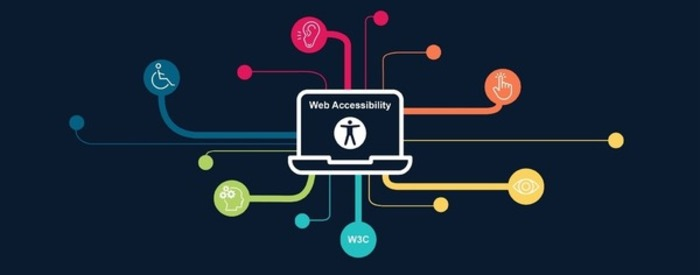
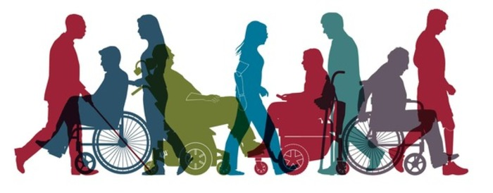

Why Universal Design?
As the 2000s have progressed, the internet has shifted from being a novelty with some daily use to being a core part of our daily lives, whether it be how we pay our bills, file our taxes, or how we unwind after work. It has become a core part of our own daily lives, with there rarely even being a day where someone at no point checks or uses the internet. Most, if not all of the necessary life actions have shifted to the internet to where it's become a requirement for daily life, regardless of if someone is able-bodied or not. It's become so important that even laws now exist mandating universal design practices for larger companies and government websites.
Even beyond it just being required, it's also a massive market of people being pushed out by the lack of universal design. Within the US alone, roughly 13% of the population has some sort of disability. While that statistic might not sound that big on paper, that accounts for about 42,000,000 people in the US with a disability alone, with that number being significantly higher when accounting for the world. Not only is this 42 million potential users that can be gained, but is 42 million users who would greatly benefit from websites being made more accessible for them.
There's a saying out there, “universal design is good design”. The act of making products universal is not only about appealing to those who are blind, or those with limited mobility, or even just those with disabilities, but is beneficial to everyone, including those who aren't disabled. Making websites universal not only allows for those who require universal design practices to engage with the internet, but benefits the “average” user with a better, more efficient product. It creates more streamlined experiences, more freedom to engage, less things that make people want to use a different site, all things that'll make your user want to use your service . Universal design exists not just to include those with disability, but to be beneficial to everyone
Universal design is something that we all benefit from: Those who have disabilities can better engage with your website, the typical user will have a better experience, and you'll have more people engaging with your website. Universal design practices help those in need while being beneficial to all, a win-win-win situation.